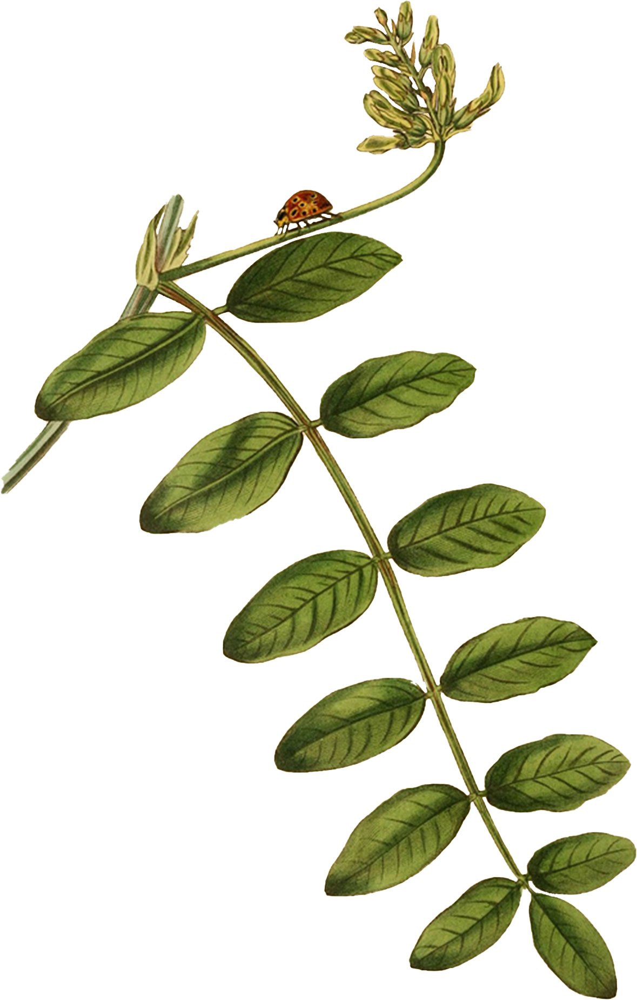

About
Explore the Harmonia Axyridis in 3D
About Harmonia Axyridis
Harmonia Axyridis, commonly known as the Asian lady beetle (or lady bug), or lady beetle is a true paradox. Their beautiful bright coral-red hues marked with dainty polka dots are a mark of danger to ward off potential predactors. Their aphid-heavy diet makes them ideal pest control solutions for farmers, yet they do tend to snack on fruits, such as grapes rendering itself a pest at times! They do also have a tendency to sting, and tend to be a cause for allergies and winter-time home infestations.
Classification
Explore the Asian lady beetle's classification, as well as some neihgbouring beetles (order Coleoptera) and other insects (class Arthropoda Insecta) for illustration
Diet
Albeit quite small in size (around 5-8mm), Harmonia Axyridis eats around 5000 aphids in its lifetime, rendering it beneficial for agricultural pest-control.
Habitat
Munching on aphids may sound like a bore, but the Asian ladybug is quite the globe-trotter, where its populations have crossed the globe from Asia, all the way to the United States, with imports starting in 1916, for pest-control purposes.
This infographic illustrates the timeline of ladybug populations across the globe*.
*Note that visualized data is fictitious
1990
Dorsal Anatomy
click on a magnifying lens for the anatomy label


Antenna
Eye
Prosternum
Prosternal keel
Femur
First abdominal segment
Tibia
Tarsus
Sixth abdominal segment
Interactive Frontal Anatomy
scroll for an interactive frontal anatomy expansion
Internal Lateral X-ray Anatomy
click and drag to reveal an x-ray of the internal anatomy